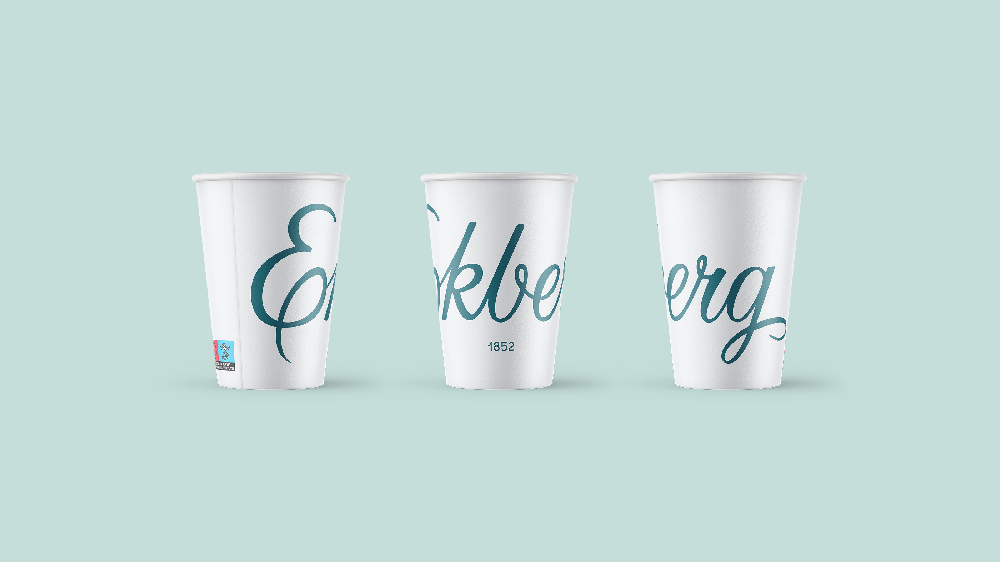
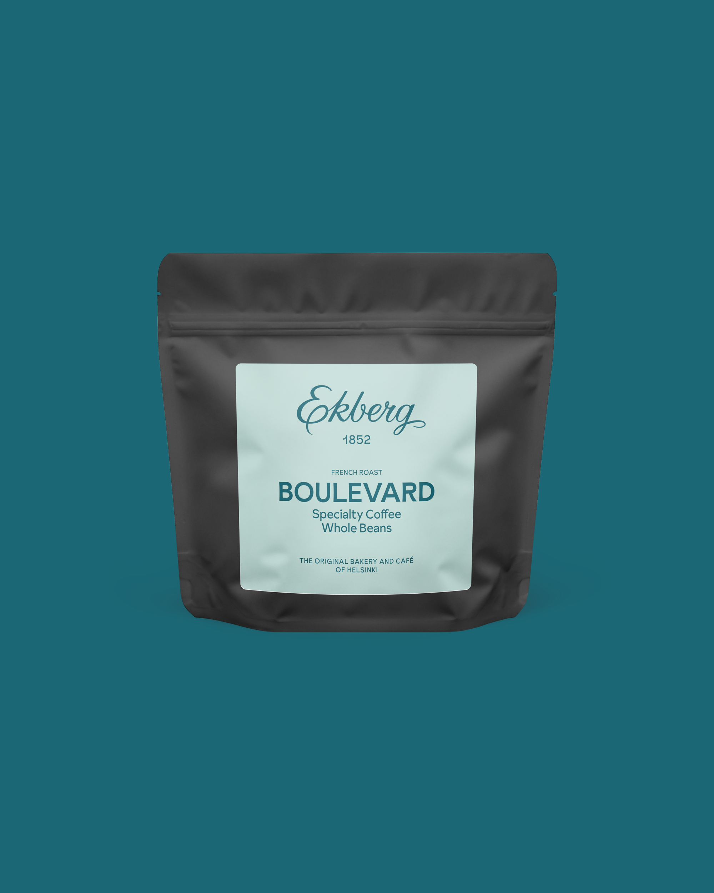
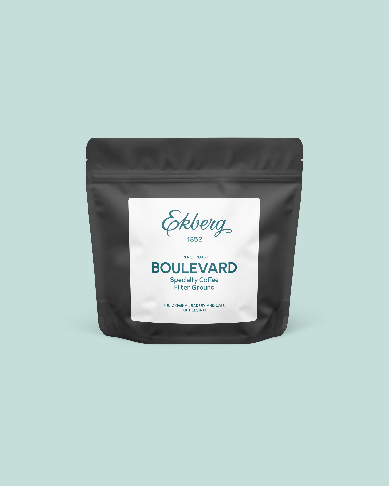
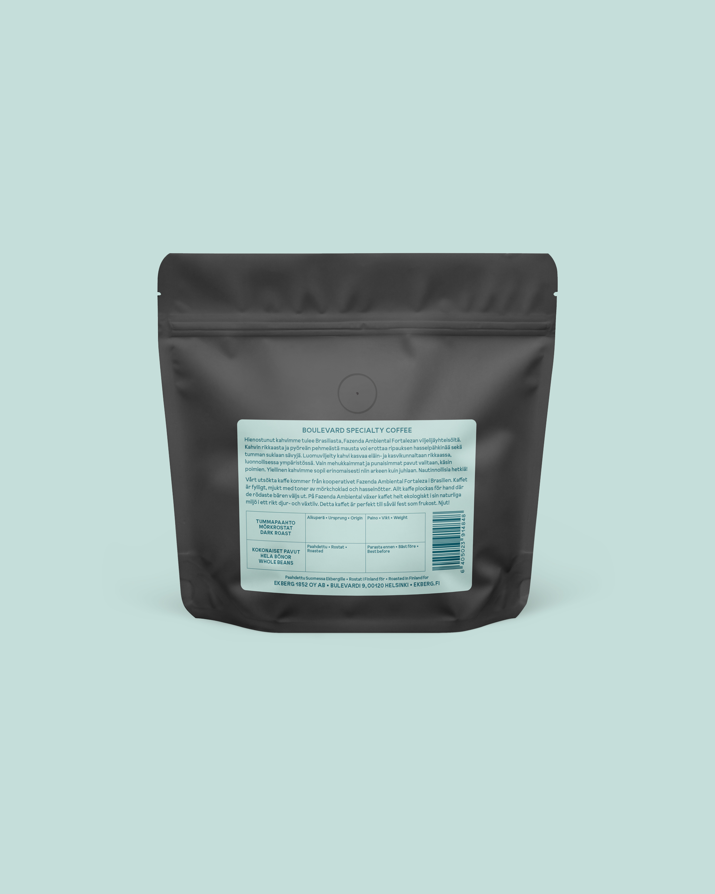
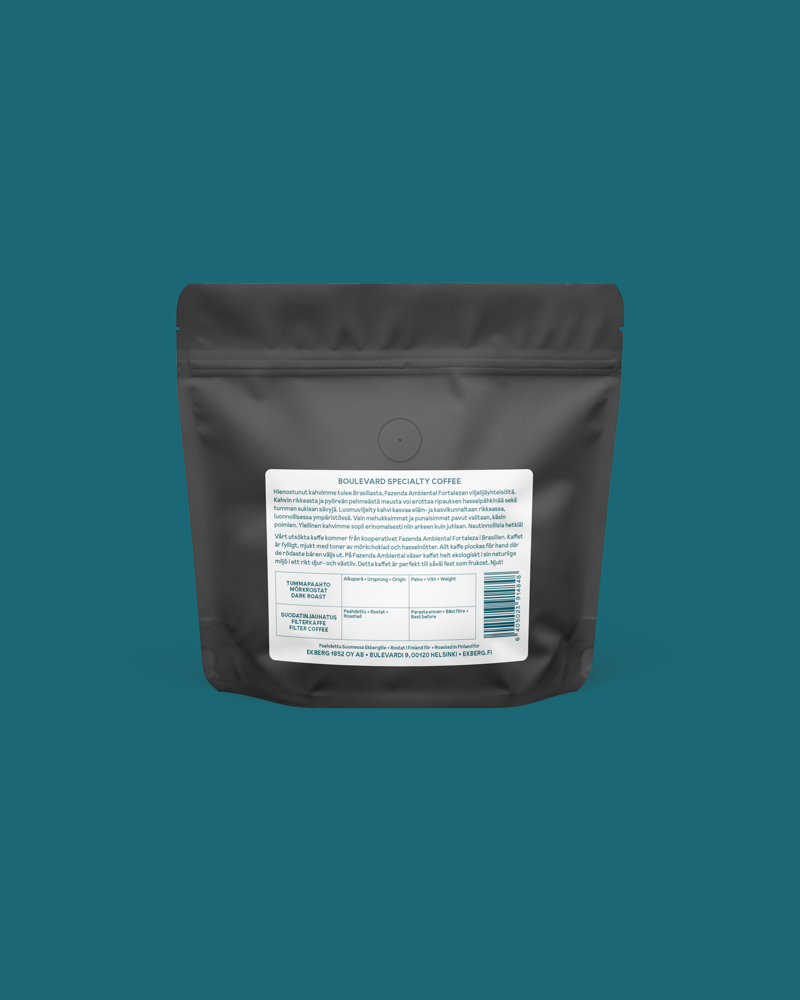

Ekberg is the oldest cafe & bakery in Helsinki. As part of the Werklig team, we positioned them as the original bakery and café of Helsinki, makes social food lovers feel cherished, charmed and connected. Building on its legacy of refined craftsmanship, I took a role in renewing the packaging design and creating visual materials for the Christmas market.




